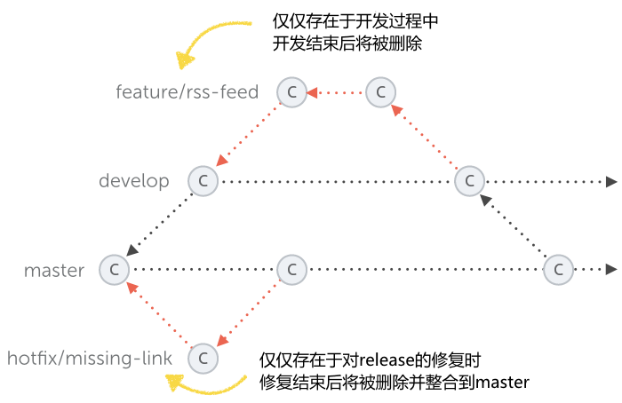
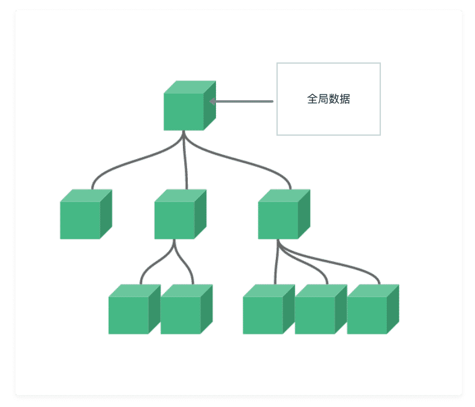
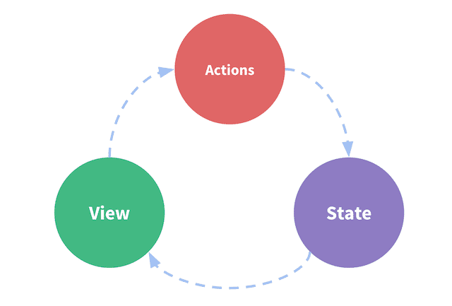

项目整体搭建
前端工具链
前端的飞速发展:带来了更复杂的项目
项目的常见需求 - 依赖管理，预编译，构建打包，压缩合并等
随着项目越来越复杂 - 诞生了 前端工程化
随着工程化的产生 - 产生了对应的 前端工具栏链
静态类型语言
动态语言的弊端
- typescript
- flow
代码风格检查Linter
多人协作的弊端，风格各异，维护和扩展的困难
- eslint
包管理器
npm
yarn - 兼容 npm registry
开发服务器
live reload
HMR
打包工具Bundler
将源代码转换成符合生成环境的代码
Webpack - Loader，Plugin，大而全的功能
Rollup - 专注于打包 输出多种格式
Parcel - 零配置
任务管理工具Task Runner
自动执行项目所需的重复任务
- CSS预处理
- 优化图片
- 合并压缩JavaScript
- 文件处理(拷贝，删除)
- 文件监听变化
- Gulp - 流式管道写法组合多个任务
- Webpack - 通过插件的方式
- npm scripts 或者 Shell脚本
脚手架 Scaffolding tools
将工具链聚合在一个工具内 简单，快速，零配置
- Vue - Vue CLI，Vite
- React - createa-react-app
- Angular - Angular CLI
Vue CLI 和 Vite 对比
Vue CLI的功能
- 工程脚手架
- 开发服务器
- 插件系统
- 用户UI界面
Vue CLI构建是基于Webpack的。主要耗时都在Webpack的性能上。
Vite
与Vue CLI类似，Vite也是一个提供基本项目脚手架和开发服务器的构建工具
然后，Vite并不是基于Webpack的，它有自己的开发服务器，利用浏览器中的原生ES模块。这种架构使得Vite比Webpack的开发服务器快了好几个数量级。Vite采用Rollup进行构建，速度也更快。
Vite目前还处于测试阶段，看来Vite项目的目的并不是像Vue CLI那样的一体化工具，而是专注于提供一个快速的开发服务器和基本的构建工具。
对比

Vite的缺点
- 测试阶段
- 只支持新版支持ES modules的浏览器
- 第三方库也需要都支持ES modules
- CommandJS支持有限
- 开发构建属于两套系统，可能导致生产和开发的不一致
Git Flow规范
所有的这些规范都是针对特定的 多人 设定的，意在让多人协作的过程更顺畅，更简单，减少不必要的冲突和时间的浪费。

预设两个分支
- master只能用来包括产品代码。你不能直接工作在这个master分支上
- develop是你进行任何新的开发的基础分支
这两个分支被称之为长期分支

功能开发feature
- 整合回到develop
- 等待更全面的测试
- 等待和develop一起进行发布
管理release
- 新功能已经添加，bug已经修复
- 代码已经被测试
- release分支使用版本号命名的
bug修复hotfix
- 针对master分支
优点:清晰可控
缺点:相对复杂，不合适持续发布
Github Flow

- 根据需求，从master拉出分支
- 激烈的开发阶段，提交commit
- 开发完毕，发起PR(pull request)
- 代码评审
- 部署，并且测试
- 没问题，merge到master
Github Flow的最大有点就是简单，对于"持续发布"的产品，可以说是最合适的流程。
两大规则
branch命名
- feature开头代表功能开发
- hotfix开头代码bug修复
commit信息，必须言之有物，杜绝update, fix bug这类废话
SPA应用路由的基本原理
SPA和普通网页应用的区别
普通网页
- 跳转到新网页，每次冲洗加载所有资源
- HTML内容是后端直接渲染的
SPA应用
- 不跳转，JS拦截器，修改URL
- JS动态渲染DOM内容
SPA路由的实现方式
History API
URL Hash
SPA优点
- 速度快
- 体验好
- 为前后端分离提供了实践场所
什么是状态管理工具
首先搞清楚，是否 真的 需要状态管理工具。
它随着SPA的出现，而浮出水面。客户端需要处理复杂的状态数据。
多个组件需要共享的一系列数据，称之为 全局数据
解决方案
方案一:单向数据流，从父组件传递到子组件

缺点
- 多层传递非常反锁
- 中间传递层有可能根本不需要这个数据
- 根组件压力太大，逻辑代码会非常繁杂
方案二 使用全局对象
缺点
- 数据非响应式
- 修改无法追踪
- 直接从组件获取数据是一种反模式
状态管理工具三杰

状态管理工具的特点
- store，神奇的全局数据结构:single source of truth
- 不能随意修改，调用特殊的方法来实现数据修改
- 变化可追溯，可预测(predictable)
Vuex
Vue的数据流
const Counter = {
// state
data () {
return {
count: 0
}
},
// view
template: `
<div>{{ count }}</div>
`,
// actions
methods: {
increment () {
this.count++
}
}
}

出现问题:多组件共享状态
- 根组件多层传递的困境
- 多组件同步数据的繁琐
Vuex的解决方案

Vuex的特点
- 核心就是一个store
- Vuex的状态是响应式的
- 不能直接改变store中state的值，需要显式的提交Mutation
const store = createStore({
state: {
count: 0
},
mutations: {
add (state) {
state.count++
}
}
})
store.commit('add')
console.log(store.state.count)